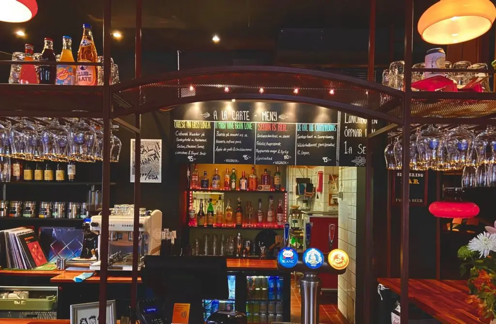

Välkommen till Hängmattan Kök & barMajornas anrika vattenhål för vegetarisk mat och livemusik.
I vår avslappnade miljö kan du äta vår populära lunchbuffé, ta en bärs, prova naturvin eller öl från något av Göteborgs lokala bryggerier. Våran egen solcellsanläggning tankar ner 100 % ren energi från taket och gör maten extra god. På kvällarna kör vi allt från intima akustiska spelningar till högljudda, svettiga klubbgig. Vi har öppet alla kvällar onsdag–söndag, och det blir massor av livemusik, DJ:s, ståuppkomik och andra events. Vi har även öppnat vår populära vegetariska lunchbuffé måndag–fredag 11.30–14.30. Mer information om menyer och spelningar finner ni på vår Instagram
